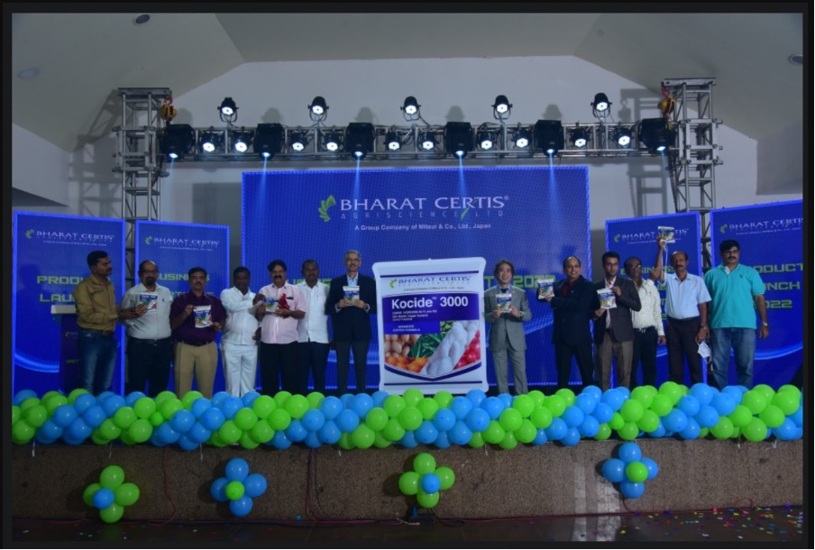

Bharat Certis AgriScience Ltd. (BCA), a group company of Mitsui & Co., Ltd., Japan added a new milestone to its journey by launching Kocide 3000, the most advanced copper technology among its distributors in Bangalore. The event was attended by distributors from Karnataka and Tamil Nadu About Kocide 3000: Kocide 3000 is the technology from Kocide LLC which is a group company of Mitsui & Co., Ltd. The product is being imported from the USA. Kocide 3000 fungicide has a very high concentration of biologically active Copper ions due to which it provides a better and longer duration of protection from diseases. It has enhanced efficacy against a wide range of Fungal & Bacterial diseases in various crops. Kocide 3000 has a unique WG formulation that guarantees high suspensibility for better results. It has an ideal particle size which provides better leaf coverage leading to maximum disease prevention performance. The distributors were excited about the launch of Kocide 3000 by BCA and the event was a great success.
